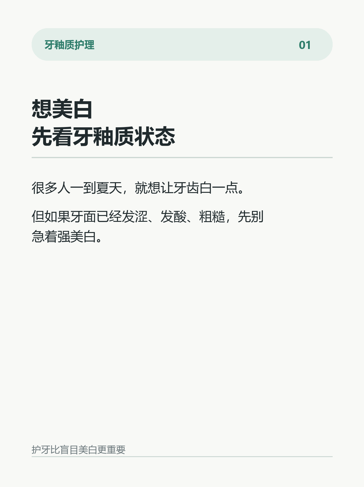
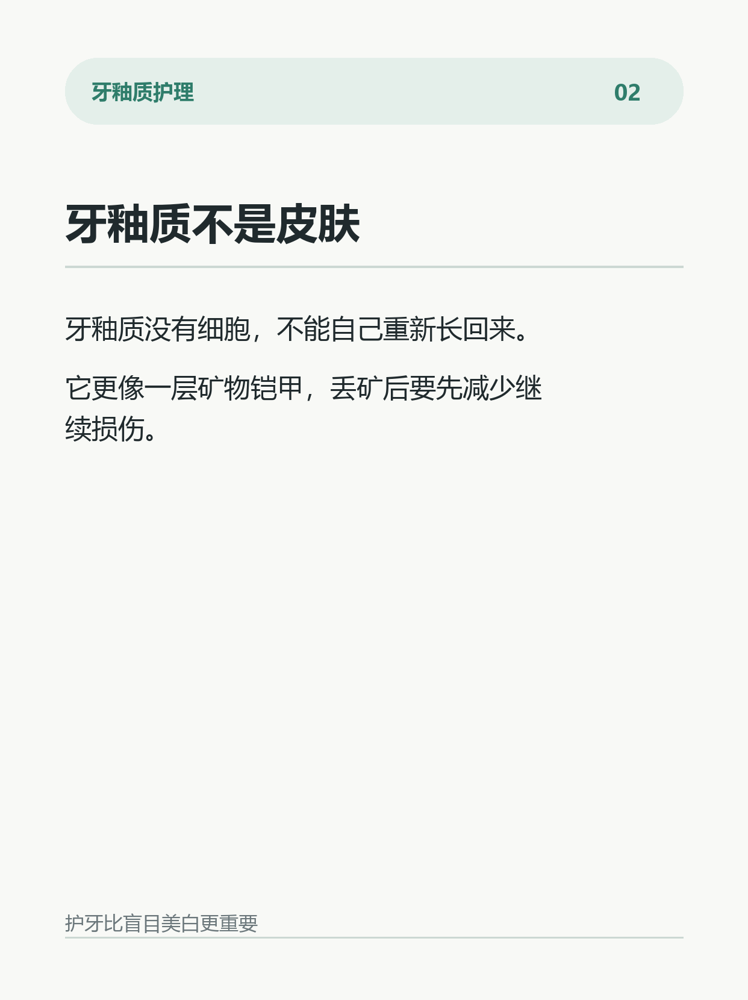
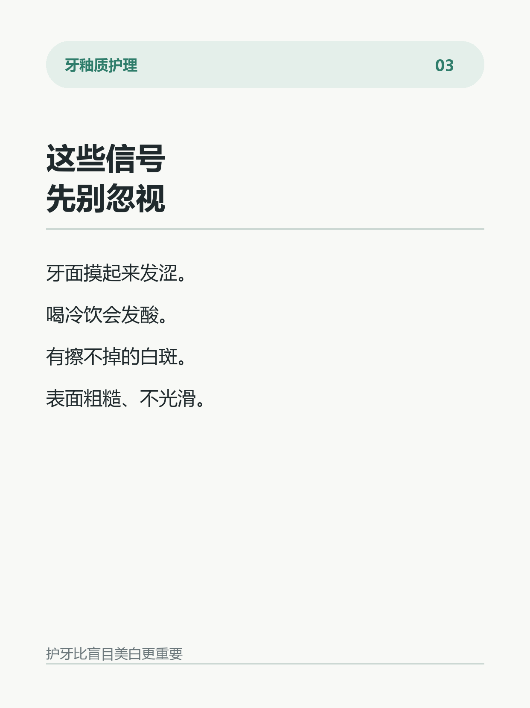
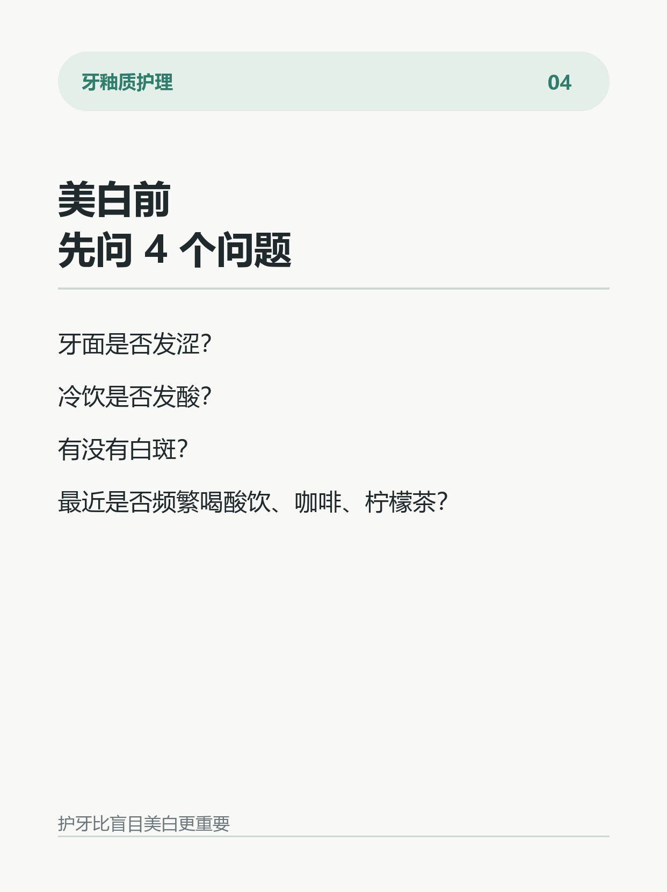
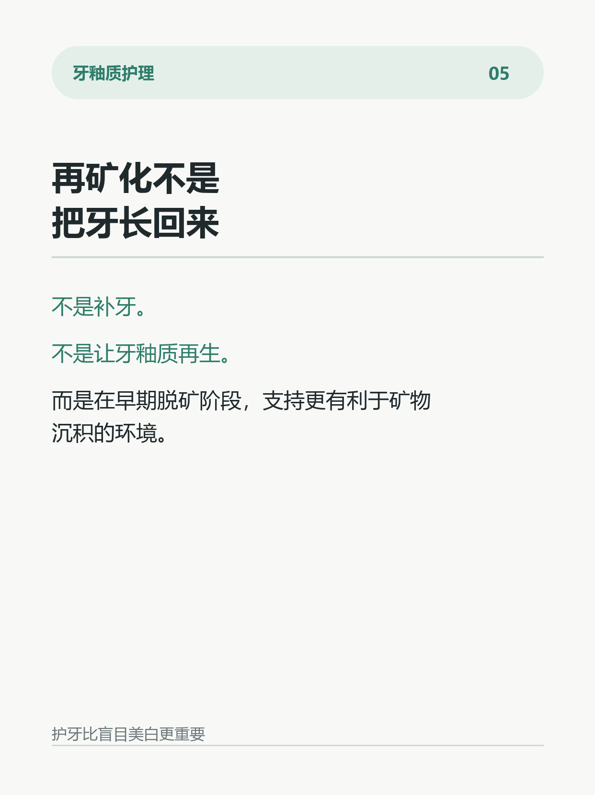
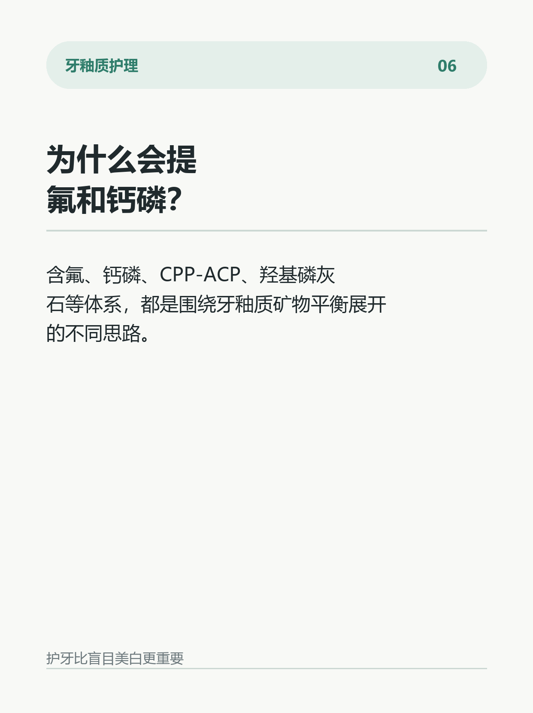
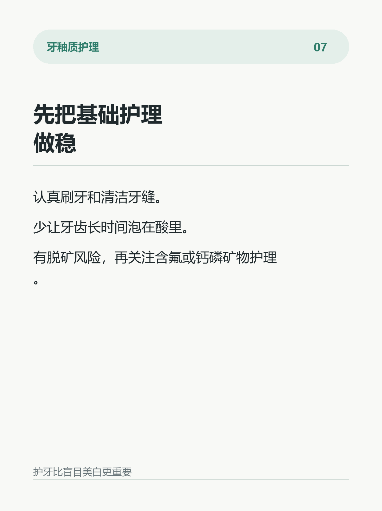
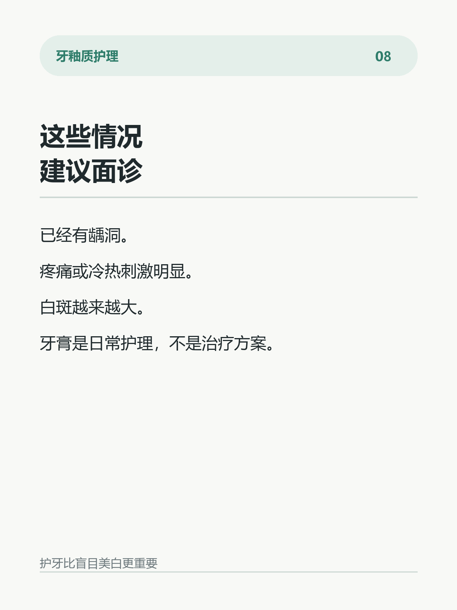

想美白，先看牙釉质状态
图文卡片








正文
很多人一到夏天，就开始想让牙齿白一点。
但我更建议先看一眼牙釉质状态。
如果牙面已经发涩、发酸、粗糙，或者有白斑，先别急着上各种强美白产品。
牙釉质不像皮肤，没有细胞，不能自己重新长回来。
所谓“牙釉质护理”，真正重要的不是追求一夜变白，而是减少继续脱矿，让牙面尽量处在更有利于矿物沉积的环境里。
这也是为什么口腔护理里会反复提到含氟、ACP/ACPF活性磷酸钙氟、羟基磷灰石等体系。
它们讨论的是早期脱矿阶段的矿物平衡支持，不是把已经坏掉的牙刷回去。
所以，美白前先问自己 4 个问题：
牙面摸起来是不是发涩？
喝冷饮会不会发酸？
牙齿上有没有擦不掉的白斑？
最近是不是频繁喝酸饮、咖啡、柠檬茶？
如果这些信号已经出现，建议先把日常清洁、含氟或钙磷矿物护理、饮食频率管理做好。
已经有龋洞、疼痛、冷热刺激明显、白斑扩大，建议面诊。
牙膏是日常护理的一部分，不是治疗方案。
健康的原生牙釉质，比盲目变白更值得守住。
话题标签
参考来源
Effectiveness of desensitizing toothpastes after tooth bleaching: systematic review, 2024；Effect of at-home bleaching agents and concentrations on tooth sensitivity: systematic review and network meta-analysis, 2025；Enamel remineralization strategies using fluoride, calcium phosphate and biomimetic mineral systems: recent systematic review evidence, 2024-2025；Hydroxyapatite toothpaste for prevention and remineralization of initial caries lesions: systematic review and meta-analysis, 2025。
合规边界
文案已避免“治愈、彻底修复、替代补牙、保证防龋、永久变白、临床效果优于”等高风险表达。当前版本无品牌名，适合作为科普型种草前置内容。